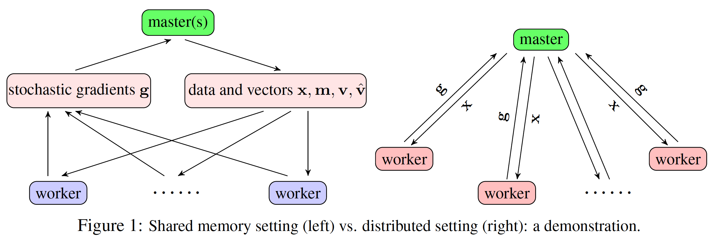
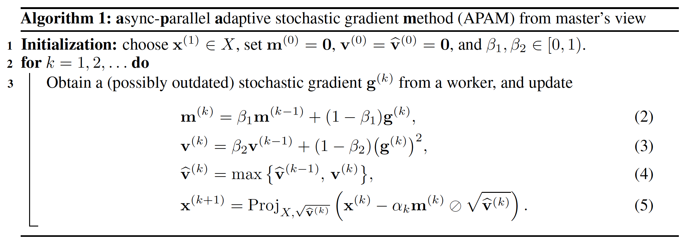
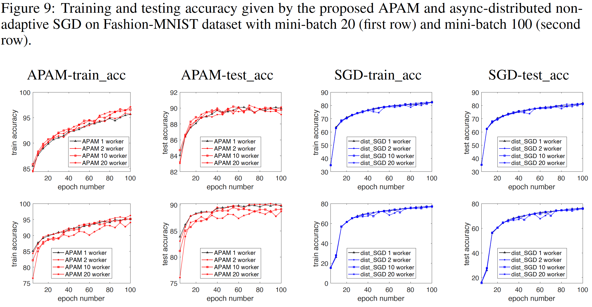
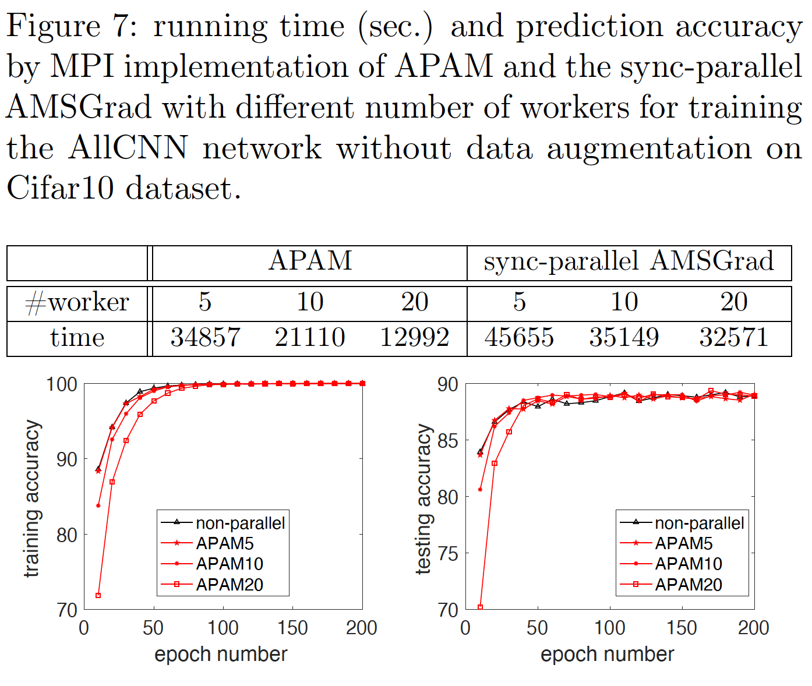

Adaptive stochastic gradient methods (SGMs), such as AdaGrad, Adam, and AMSGrad, have become very popular due to their great success in training deep learning models. These adaptive SGMs can practically be significantly faster than a classic non-adaptive SGM. We aim at speeding up adaptive SGMs on massively parallel and distributed computing resources. One way is to parallelize them in a synchronous (sync) way by using a large batch size, in order to obtain high parallelization speed-up. However, large-batch training in deep learning can often lead to worse generalization than small-batch training. To simultaneously gain fast convergence, high parallelization speed-up, and also good generalization, we propose to develop asynchronous (async) parallel adaptive SGMs.
Our algorithm, named as APAM, is designed under both shared-memory and distributed settings. For both settings, we adopt a master-worker architecture; see the illustration in Figure 1 below. APAM can be viewed as the async-parallel version of AMSGrad, due to the good theoretical and also practical performance. From the master's view, the pseudocode is shown in Algorithm 1 below.
|  |
|  |
We compare APAM to an async-parallel non-adaptive SGM for training the LeNet5 network on MNIST data set, and also to its synchronous counterpart for training an AllCNN network on Cifar10 data set. The sync-parallel adaptive method achieves very low parallelization speed-up, while APAM can achieve significantly higher speed-up. In addition, APAM inherits the fast convergence of adaptive stochastic gradient method and can yield higher prediction accuracy than the async-parallel non-adaptive SGM.
|  |
|  |
Yangyang Xu, C. Sutcher-Shepard, Yibo Xu and J. Chen. Asynchronous parallel adaptive stochastic gradient methods. arXiv:2002.09095